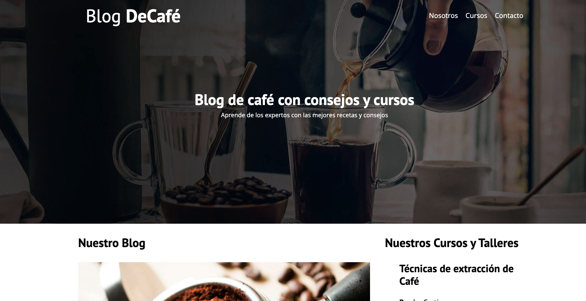

Mis Proyectos
Aquí puedes ver algunos de los trabajos y proyectos en los que he participado o desarrollado. Reflejan mis habilidades en ciencia de datos, programación y desarrollo web.

Análisis de Datos de Ventas
Proyecto de universidad/personal donde se realizó un análisis exploratorio de datos de ventas utilizando Python y bibliotecas como Pandas y Matplotlib.
Ver Proyecto
Sitio Web Personal Sencillo
Primer acercamiento al desarrollo web creando un sitio básico con HTML y CSS. Demuestra comprensión de la estructura y estilos web.
Ver Proyecto
Script de Automatización con Python
Pequeño script en Python para automatizar una tarea repetitiva (ej: procesamiento de archivos de texto). Muestra habilidades de scripting.
Ver Proyecto